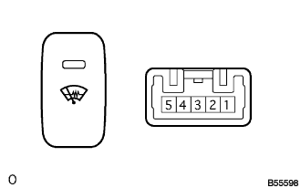
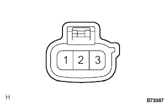

Inspection on the front wiper dia switch |
| 1. Front Wiper Dea Switch Inspection |
Operation inspection
|  |
Separate the connector and use a SST (Toyota Electrical Tester) to inspect the voltage and conduction between each terminal of the vehicle side connector.
| Terminal number | item | Measurement conditions | standard |
|---|---|---|---|
| 5 (IG) ← → Body Earth | Voltage | Ignition switch on | 10-14V |
| 1 (ILL+) ← → Body Earth | Voltage | Head lamps Dimaswitch ASSY (Light Control Switch) ON | 10-14V |
| 3 (E) ← → Body Earth | Conduction | Always | There is an conductor |
| 2 (ILL-) ← → Body Earth | Conduction | Always | There is an conductor |
Connect the connector.
Use SST (Toyota Electrical Tester) to check the voltage of each terminal of the vehicle connector.
| Terminal number | item | Measurement conditions | standard |
|---|---|---|---|
| 4 (D) ← → Body Earth | Voltage |
| 0V → 10-14V (15 ± 3 minutes) → 0 |
Indicator lighting inspection
When the front wipedadea suspension switch is turned on with the ignition switch ON or connected, the indicator turns on and turns off after 15 ± 3 minutes.
Illumination lighting inspection
When the light control switch is turned OFF to ON in the connector connection state, check the illumination indicator lighting.
Front with shield conduction inspection
|  |
Separate the connector and use SST (Toyota Electrical Tester) to inspect the conversation between the connector on the front window shielded aiser side.
| Terminal number | standard |
|---|---|
| 1-2 | There is an conductor |
| 2-3 | There is an conductor |
| 1-3 | There is an conductor |